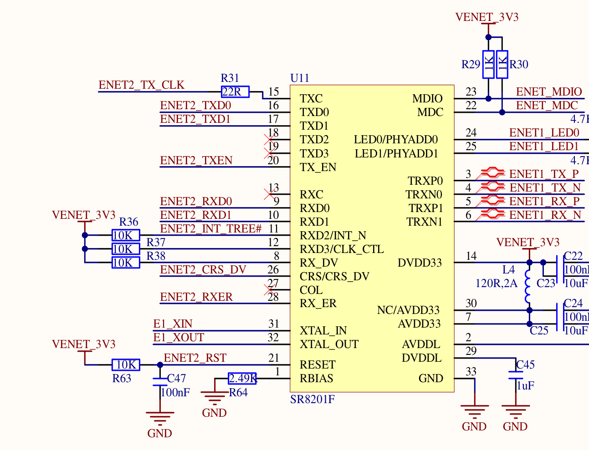

EMI 与屏蔽：辐射从哪来、磁珠怎么选、罩子怎么开缝
EMI 不是玄学，是三个可测量的量：电流、环路面积、频率。这一章把辐射的物理链拆开，算出「面积减 10 倍 = 20dB」「频率减半 = 12dB」，再讲磁珠、共模电感、屏蔽罩的具体用法。

读完这一章，你应该能
- 分清差模辐射与共模辐射，说出各自的抑制手段
- 用「电流×面积×频率²」判断哪一项最值得改
- 选磁珠：看 100MHz 阻抗、直流电阻、额定电流三个参数
- 用 λ/20 规则决定屏蔽罩缝隙与通风孔尺寸
- 用近场探头 + 频谱仪按「先定位、再改板」的顺序排查
6.2.1辐射的三要素
任何 EMI 问题都能拆成：源（di/dt 或 dv/dt）→ 耦合路径（环路或电缆）→ 天线（长度接近 λ/4）。三要素缺一不可，所以抑制也从三处下手：
| 要素 | 本板例子 | 抑制 |
|---|---|---|
| 源 | DCDC 的 SW 节点（dv/dt 大）、DDR 时钟（di/dt 大） | 缓冲 RC、展频、减小节点面积 |
| 路径 | 电源环路、地弹、电缆 | 减小环路面积、加磁珠/共模电感 |
| 天线 | 1m 长的电源线、排线 | 缩短、双绞、屏蔽、铁氧体磁环 |
6.2.2差模辐射：环路是天线
电流环路的辐射场强近似与「面积 × 电流 × 频率²」成正比（远场、小环近似）。三个推论：
- 环路面积减 10 倍 → 辐射降 20dB；
- 频率减半 → 辐射降 12dB（f² 关系）；
- 电流减半 → 降 6dB。
所以「SW 节点铜箔铺大」是自找麻烦：面积翻倍就是 +6dB。本板 DCDC 的 SW 节点刻意做小，电感紧贴 SW 脚，就是为了压面积。
最有效的动作往往是「把输入电容挪到 DCDC 的 VIN/GND 脚旁 1mm 内」——环路面积从 50mm² 降到 5mm²，直接 −20dB。
6.2.3共模辐射：电缆是天线
共模电流沿电缆流动，电缆长度接近 λ/4 时辐射效率最高。100MHz 时：
λ = 300/f(MHz) = 3 m，λ/4 = 0.75 m
所以「1m 长的电源线」在 100MHz 附近是很好的天线；而 10cm 的板内走线不是（λ/4 需要 75cm）。这就解释了为什么「板内没问题、一插电缆就超标」。
抑制共模：
- 共模电感（本板网口变压器 ATK9111A 内含共模扼流）；
- 铁氧体磁环夹在电缆上（增加共模阻抗）；
- 降低地弹：地平面完整、接口地单点连接；
- 屏蔽电缆 + 360° 端接（不是「一根地线」）。
6.2.4磁珠：不是「电感」，是「频率相关电阻」
磁珠在低频是电感（几乎不衰减信号），在高频变成电阻（把噪声变热）。选型看三个参数：
| 参数 | 含义 | 本板 L3/L4 |
|---|---|---|
| Z@100MHz | 100MHz 时的阻抗 | L3 220Ω、L4 120Ω |
| DCR | 直流电阻（压降与发热） | L3 0.05Ω、L4 更低 |
| 额定电流 | 饱和电流 | L3 2.0A、L4 2A |
插入损耗：50Ω 系统中，220Ω 磁珠的理论衰减 = 20log(220/50+1) ≈ 14.5dB（实际因寄生电容会低一些）。
常见错误：用磁珠给「大电流电源」滤波，结果 DCR 压降 0.2V、发热；或用了 Z@100MHz 很高但 DCR 也高的型号，负载一重就掉压。原则：磁珠只用于小电流信号/局部电源，大电流用 0Ω 或电感。
6.2.5屏蔽罩：缝隙比材料更重要
屏蔽罩的屏蔽效能取决于「缝隙最长边」而不是厚度。经验规则：
缝隙长度 < λ/20
1GHz 时 λ=30cm，λ/20=15mm——所以通风孔阵列（每个孔 <15mm）是有效的，但一条 30mm 的长缝就会漏。对策：
- 通风孔用「小孔阵列」而不是长条槽；
- 罩子与地平面用「多点弹片/导电泡棉」360° 接触，间距 <λ/20；
- 线缆出入口加「穿墙式滤波连接器」或磁环。
6.2.6实测：先定位再改板
- 近场探头扫板：在频谱仪上扫 30MHz–1GHz，找出辐射最强的区域（通常是 SW 节点、DDR、晶振、连接器）；
- 逐项断开：停 DCDC（外部供电）、停 DDR 时钟、拔电缆，看哪一项让峰值下降；
- 改一处、测一次：加磁珠、贴铜箔、缩短环路，每次只改一个变量；
- 整机复测：装外壳、接实际电缆，按 CISPR 22/EN 55032 的 Class B 限值判定。
没有频谱仪时，可以用「近场探头 + 示波器 FFT」做定性判断——虽然不准，但足以比较「改前/改后」。